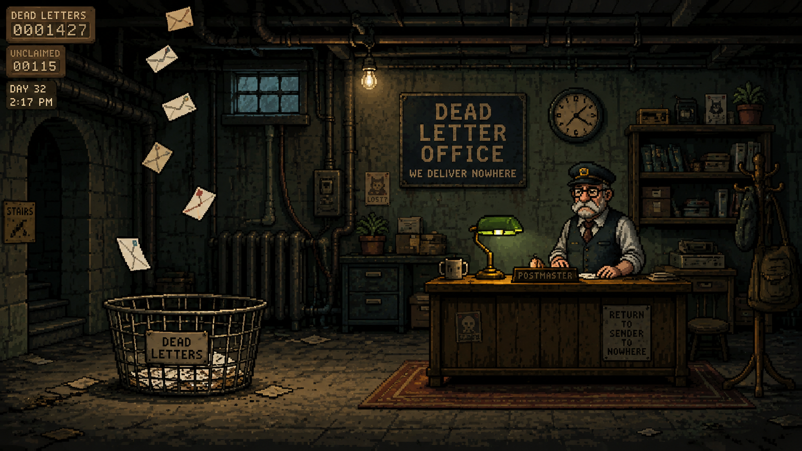

Sub-basement four. Undeliverable mail falls from somewhere upstairs and the postmaster keeps it differently. Mind the basket.

coming down the stairs…
drag to look · WASD / arrows to walk · click a letter to read it · E opens the nearest · Esc refolds
DEAD LETTER OFFICE · 3D r6 · 2026-07-22
through the stairwell door